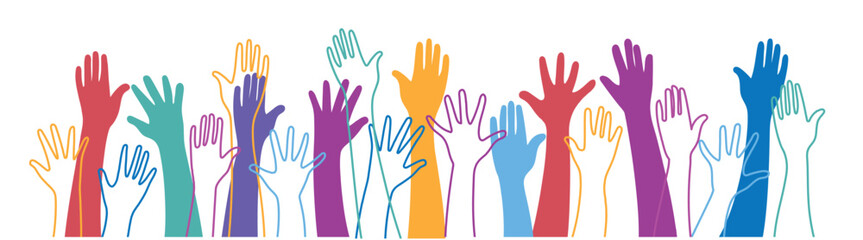
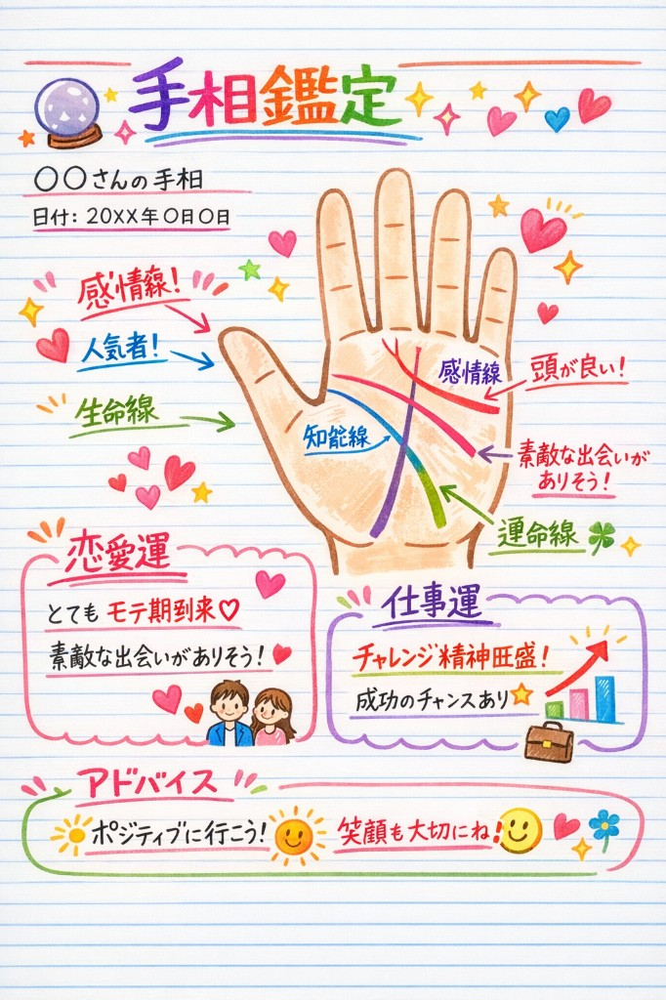
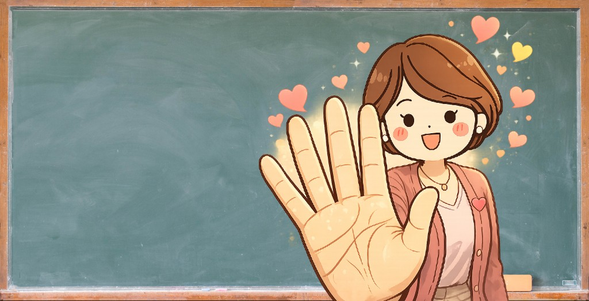

無料手相体験&講座説明会
内容
説明会では、おおまかに次の順で進行します。
-
手相鑑定&カウンセリング体験
（30分） -
講座の料金・カリキュラム案内
（約60分）
手のひらは人生を教えてくれる
突然ですが、あなたの手のひらには、あなたの「これまで」と「これから」が刻まれています。
そんなふうに言われたら、少し不思議に感じるかもしれません。
「手相なんて変わるわけがない」
そう思われる方もいらっしゃるでしょう。
でも、実は──
手相は変わります。
線は、あなたの生き方のあとがきのように伸びていきます。
だからこそ手相は、閉じた運命ではなく、
あなたが選び直していける人生の地図なのです。
手のひらは、あなたの人生の成績表
当たり前のことですが、
生年月日は変わりません。
星の配置も、戻ることはありません。
生まれをもとにする占いは、
大きな流れを読むのに向いています。
でも、手相は違います。
手のひらには、足あとみたいに、
- これまで選んできた道のり
- 考え方や感情のクセ
- 生き方が少しずつ変わったあと
が、そのままにじみ出ています。
今までどう生きてきたか。
どんな思いを抱えてきたのか。
その答えが、静かにそこにあります。
そして、生き方が変われば、
線も、
あなた自身も、少しずつ形を変えていきます。
未来は、いつからでも動かせる。
私は、手相にそう教えられてきました。
30年、1,000以上の手が教えてくれたこと

私は占い師として30年、1,000名以上の方に
手相の読み方と伝え方をお伝えしてきました。
手相には、ほかの占術にない温かさがあります。
それは、相手の手に触れながら、
人生を言葉にしていけること。
目の前の人の手を取り、
その人だけの物語を丁寧に返す。
その瞬間、相手の表情がふっとやわらぎます。
「この人は、ちゃんと私を見てくれている」
言葉にしなくても、胸の奥にそう届くのです。
占い師ではなく、カウンセラーとして
ここまで読んで、胸のあたりが
少し熱くなっていませんか。
「やってみたい」「できるようになりたい」。
でも、「私にできるのかな…」と、
同じ場所で立ち止まってしまう。
実際に多くの方が、
- 本を読んでも、実際の手を見るとわからない
- 意味は知っているのに、言葉にできない
- 学んでも、鑑定として成立しない
という壁の前で、そっとページを
閉じてしまいます。
けれど原因はシンプルです。
手相は知識だけでは、
手のひらの前で言葉が出てきません。
本や動画だけでは足りないのが、
「生きた手を見て、届ける練習」です。
イラストと、目の前の人の手は、
まったく違います。
だから「意味はわかるのに、
何を伝えればいいかわからない」で止まるのです。
手相は、
- どこを見るか
- 何を拾うか
- どう伝えるか
この順番で、少しずつ体感に変えていけば、
誰でも「使えるスキル」になります。
私のもとでは、読めなかった方が、
伝えられる側へ踏み出した例がたくさんあります。
違いはただ一つ。
練習の場、圧倒的なアウトプットが
必要だったのです。
「話しやすい人」から 「また会いたい人」へ
この講座でお伝えするのは、
線の意味を並べることだけではありません。
手相を通して、
- 相手の不安を、急かさずほどく
- まだ言えなかった可能性を、やさしく言葉にする
- 背中を、そっと押す
そんな関わり方を、身体で覚えていくのが
愛され手相カウンセラーという在り方です。
手相が読めるようになると、
特別なセリフがなくても、
人との距離の詰め方が変わります。
- 初対面でも、自然と呼吸が合っていく
- 相手の迷いに、そっと言葉を添えられる
- 「また話したい」と、あとから返ってくる
気づけばあなたは、「話しやすい人」から
「また会いたい人」へ、少しずつ移り変わっていきます。
講座のなかで、あなたが手にするもの

線を追うだけでは終わらない。
受講後は、自分の手のひらの前でも
迷いにくい軸が残るように設計しています。
第1回｜手の形
人となりを読み取る土台をつくる
第2回｜生命線・知能線
生き方と考え方の軸を読む
第3回｜感情線・運命線
人間関係と人生の方向性を理解する
第4回｜太陽線・財運線・結婚線
現実的な相談に対応できる力をつける
第5回｜その他の線
印象に残る鑑定をつくる
第6回｜実践演習
伝え方まで落とし込む
受講を終えたあと、
手元にはたぶんこんな手応えが残ります。
- 手相を前にしても迷わない軸
- 相手の心に届く伝え方
- 人との距離が自然に縮まる関わり方
そして何より、「私でも、誰かをよろこばせられる」
という、胸に残る実感です。
選択できる2つの働き方
働き方１
対面で行う「お絵かき手相鑑定」
マルシェやお友達などで手相鑑定し、手書きの鑑定書を渡します。
ネットの時代だからこそ、温かみがあり喜ばれるサービスです。
提供価格5千円〜1万円

画像はイメージです
働き方２
ネットで行う「手相を教える先生」
ストアカ（サイト）などに登録して手相の講座を開講！
先生として活動が始められます。
提供価格10万円〜15万円

無料手相体験&講座説明会
内容
説明会では、おおまかに次の順で進行します。
-
手相鑑定&カウンセリング体験
（30分） -
講座の料金・カリキュラム案内
（約60分）
講師について・プロフィール 本田 有紀華（ほんだ ゆきか）

手のひらに刻まれた物語を、やさしく言葉に変えていく。
その瞬間に、人の未来は少しずつ動きはじめます。
- 占い師として30年。線の先にいる人の表情が、ふっとやわらぐ瞬間を何度も見てきました
- タロット・占星術・数秘など複数の占術を扱う実践派講師。手相は「人の心を開く占術」として育成に力を入れています
- 「当てる占い」だけでなく「心に寄り添う伝え方」の育成を重視
- 手相を通じて、相談者の可能性を言葉にする鑑定スタイルを確立
うまくできなかった私から、 求められる私へ
人との関わり方は、ほんの少し変わるだけで、朝の空気まで違って見えてきます。
今までの「うまくできなかった私」から、「自然と人に求められる私」へ。
その距離は、想像より近いことがあります。
その一歩を、まずは体験してみてください。
無料の手相体験と講座の説明会では、「どう話せばいいか」「どこから整えればいいか」を、いきなり正解を並べるのではなく、あなたのペースで、一緒に見ていきます。
難しい知識がなくても大丈夫です。
これまでのあなたの経験や、人への向き合い方そのものが、これからの土台になります。
画面の向こうで、一度、体感してみてください。
「私にも、ちゃんと道があるかもしれない」――そんな小さな手応えが、朝の空気を変える、最初のひと押しになることがあります。
下のフォームから、説明会にお申し込みいただけます。
あなたの「ちょっと気になる」を、大切に待っています。